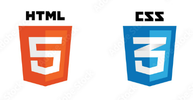

My Website : )
Perbedaan HTML dan CSS: Pengertian dan Fungsinya dalam Desain Web
5 Maret 2023 oleh Widiansyah Anugerah
HTML dan CSS merupakan dua hal yang saling terkait dalam pembuatan sebuah website. Meskipun keduanya sering digunakan bersamaan, namun banyak juga orang yang belum mengetahui perbedaan antara keduanya. Jika kamu penasaran perbedaan dari kedua hal tersebut, maka kamu sudah berada di artikel yang tepat!
Apa itu HTML dan CSS?
HTML dan CSS adalah dua bahasa pemrograman yang sangat penting dalam pembuatan website. Keduanya memiliki perbedaan dan fungsi yang berbeda, meskipun keduanya digunakan secara bersama-sama untuk menghasilkan halaman web yang lebih menarik dan interaktif. Untuk memahami perbedaan antara HTML dan CSS, kita perlu memahami apa itu HTML dan CSS terlebih dahulu.
HTML (Hypertext Markup Language) adalah bahasa markup standar yang digunakan untuk membuat dan merancang halaman web. HTML digunakan untuk mengatur struktur dan konten halaman web, seperti memformat bagian teks, gambar, video, tabel, audio, dan elemen lainnya.
CSS (Cascading Style Sheets), di sisi lain, digunakan untuk mengontrol tampilan dan tata letak halaman web. CSS digunakan untuk mengubah warna, ukuran, jenis huruf, jarak, dan tingkat transparansi elemen pada halaman web. Dengan CSS, Anda dapat membuat halaman web lebih menarik secara visual dan mudah dibaca bagi pengguna.
Perbedaan Antara HTML dan CSS
HTML dan CSS adalah dua bahasa pemrograman yang sering digunakan dalam web development.Kedua bahasa ini berfungsi untuk membangun tampilan dan konten website. Meskipun keduanya saling berhubungan, tetapi keduanya memiliki perbedaan dalam bentuk fungsinya. Dibawah ini merupakan tabel perbandingan perbedaann antara HTML dan CSS
| HTML | CSS |
| Menentukan struktur dan konten halaman web. | Mengontrol tampilan dan tata letak halaman web |
| Menggunakan tag dan elemen HTML | Menggunakan properti dan aturan gaya CSS. |
| Digunakan untuk membuat halaman web yang mudah dibaca dan dipahami. | Digunakan untuk membuat halaman web lebih menarik secara visual. |
| Penulisan kode HTML biasanya dilakukan dengan cara mengetikkan tag-tag HTML pada text editor. | Penulisan kode CSS biasanya dilakukan dengan cara membuat style sheet terpisah dalam file CSS atau memasukkan CSS tersebut langsung ke dalam tag HTML menggunakan atribut style. |
Kenapa Perlu Belajar HTML dan CSS?

1. Mempermudah Pembaruan Konten
Belajar HTML dan CSS sangat penting untuk mempermudah pembuatan dan pembaruan konten pada sebuah website. Dengan HTML, Anda dapat membuat halaman website secara struktural, dengan tata letak yang teratur dan mudah dipahami oleh pengunjung. Sedangkan dengan CSS, Anda dapat mengatur tampilan visual dari konten tersebut, sehingga dapat memperindah tampilan website dengan mudah.
2. Membangun Website yang Menarik
Keahlian dalam HTML dan CSS juga sangat membantu dalam membangun website yang menarik dan interaktif, dengan desain yang sesuai dengan kebutuhan pengguna. HTML dan CSS dapat digunakan untuk mengatur tampilan website, seperti pemilihan font, warna, layout, animasi dan masih banyak lagi. Dengan mempelajari HTML dan CSS, Anda bisa berkreasi dengan ide-ide kreatif untuk membuat website yang berbeda dan menarik bagi pengunjung.
3. Meningkatkan Kelengkapan Informasi
Yang tak kalah penting, HTML dan CSS juga membantu meningkatkan kelengkapan informasi pada sebuah website. Dengan HTML dan CSS, Anda dapat menambahkan berbagai elemen seperti tabel, grafik, audio, video, form dan lain-lain. Hal ini akan memudahkan pengunjung website dalam mencari informasi yang diinginkan. Penggunaan HTML dan CSS yang tepat juga dapat meningkatkan keterbacaan website pada mesin pencarian, sehingga website Anda lebih mudah ditemukan oleh calon pengunjung.